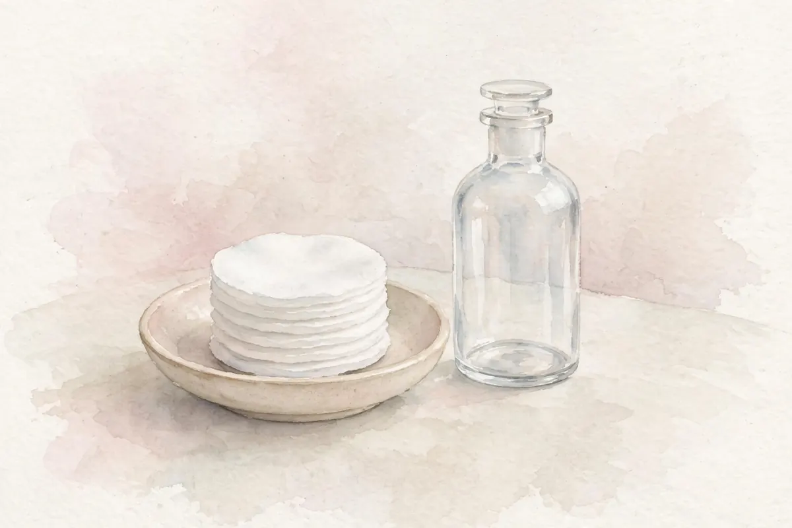

トップ ＞ スキンケア ＞ 拭き取りパッド・トナーパッドの使い方：表示で見る枚数と力加減
拭き取りパッド・トナーパッドの使い方：表示で見る枚数と力加減

施術の仕事をしていると、お客様から「拭き取りパッドって、コットンに化粧水をつけて拭くのと何が違うんですか」と聞かれることがあります。店頭に並ぶ拭き取りパッドやトナーパッドは、化粧水を含ませたシートが1枚ずつ取り出せる形のアイテムです。この記事では、特定の商品の話ではなく、パッドタイプの表示の読み方と使い方の考え方を整理します。私自身、新しいパッドを手に取るときは、まずこの表示を確認するようにしています。
パッドのタイプは、大きく2つの形
ひとつ目は、薄いシートが重なったタイプです。1枚が薄く、肌の上にのせたり、軽く拭いたりする使い方が案内されていることが多い形です。ふたつ目は、少し厚みのあるスポンジ状や、両面で感触が違うタイプです。片面がなめらかで、もう片面が少し凸凹しているものもあり、面を使い分ける案内が書かれていることがあります。
どちらのタイプも、パッケージの「使用方法」の欄に、1回に使う枚数と、拭く順番や置く時間の目安が書かれています。枚数の表示は「1回1枚」「朝晩1枚ずつ」のように、回数とセットで書かれていることが多いので、買う前にこの欄を読むのが私のやり方です。1枚で顔全体をまかなう設計のものもあれば、部分使いを想定したものもあります。
表示で確認したい3つの欄
ひとつ目は、枚数と内容量の表示です。「60枚入り」「1か月分」といった書き方があり、1日に何枚使う前提かで、なくなるまでの期間が変わります。朝晩使う前提のものと、夜だけの使用を想定したものでは、1枚あたりの計算が違ってきます。
ふたつ目は、使用期限の目安です。「開封後はなるべく早めに使う」「開封後3か月を目安に」といった案内が書かれていることがあります。パッドは化粧水を含んでいるため、開封した日を容器に書いておくと、使い切る時期の目安になります。私は開封日を書いておくようにしています。
みっつ目は、使う順番の案内です。「洗顔のあとに使う」「化粧水の前に使う」といった書き方があり、そのあとに何を重ねるかの案内とセットで読むと、夜のケアの流れが決めやすくなります。順番が書かれていないものは、手持ちのアイテムの手順と照らし合わせて考えることになります。
拭くときの力加減と、置く使い方
パッドを使うとき、私が気をつけているのは力加減です。肌の上をこするように動かすのではなく、パッドの重みを借りて、そっとなでるように動かすのが基本です。特に目元や口元は皮膚が薄い部分なので、力を入れずに、パッドを置いてなじませる使い方をする人もいます。
拭く順番は、顔の中心から外側へ、という案内が書かれていることがあります。額、頬、あご、といった具合に、場所ごとにパッドの面を変えながら使うと、1枚を無駄なく使えます。パッドが乾いてきたと感じたら、無理に拭き続けず、新しい1枚に替えるのが無駄になりにくい使い方です。
「置く使い方」も、パッケージに書かれていることがあります。頬などに数分置いてから外す、という案内で、拭く使い方とは別の手順です。置く時間の目安も表示に書かれているので、初めて使うときは、その時間を守るのが基本です。置いている間にパッドが乾いてしまう場合は、置く時間を短めにするなど、様子を見ながら調整します。
開封後の保管と、使い切りの工夫
パッドの容器は、フタの開け閉めがしやすい形のものが多いですが、フタをしっかり閉めないと、中のシートが乾いてしまうことがあります。使うたびにフタをきちんと閉める、という当たり前のことが、最後の1枚まで使い切るコツです。フタの裏にパッキンが付いているものは、パッキンを外さずに使うのが基本です。
保管場所も、表示の確認ポイントです。「直射日光を避けて保管する」「高温の場所を避ける」といった案内が書かれていることがあります。洗面所の棚に置く場合は、湿気がこもりにくい場所を選ぶと、容器の中が蒸れにくくなります。
迷ったときは、まず表示通りの枚数と手順で1〜2週間使ってみてください。使い方が合っているかどうかは、拭いたあとの感触と、翌朝の肌の様子で判断するのが分かりやすいと思います。使っていて肌に合わない感じがしたときは、使用をいったんやめて、気になる場合は皮膚科などの専門家に相談してください。この記事は表示の読み方の案内であり、商品ごとに表示がある場合は、そちらが優先です。
セラフィナ「パッドは便利だけど、力加減が大事なんだね。こすらず、そっとなでるように、が合言葉だよ」